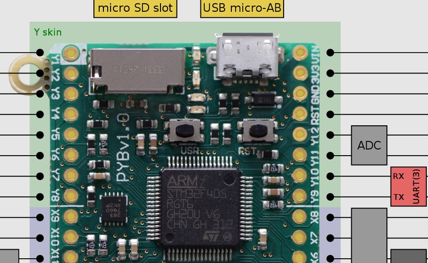

I plan to try out the pyboard and keep notes here.
Pyboard is a ARM based microcontoller board designed as a platform for Micro Python.
Tested soft rest using Debian Linux and Minicom.
PYB: sync filesystems PYB: soft reboot Micro Python v1.3.3 on 2014-10-02; PYBv1.0 with STM32F405RG Type "help()" for more information. >>>
